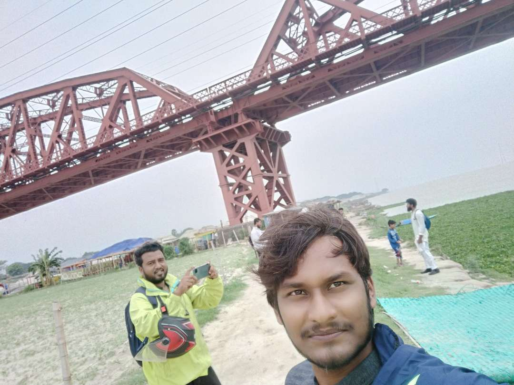

Ami paragraph pari.
aita o arekta
go to my website youtube songs visit my facebook 

A middle power in the Indo-Pacific,[23] Bangladesh is home to the sixth-most spoken language in the world, the third-largest Muslim-majority population in the world, and the second-largest economy in South Asia. It maintains the third-largest military in the region and is the largest contributor of personnel to UN peacekeeping operations.[24] Bangladesh is a unitary parliamentary republic based on the Westminster system. Bengalis make up 99% of the total population. [25] The country consists of eight divisions, 64 districts and 495 subdistricts, as well as the world's largest mangrove forest. It hosts one of the largest refugee populations in the world due to the Rohingya genocide.[26] Bangladesh faces many challenges, particularly corruption, political instability, overpopulation and effects of climate change. Bangladesh has been a leader within the Climate Vulnerable Forum. It hosts the headquarters of BIMSTEC. It is a founding member of SAARC , as well as a member of the Organisation of Islamic Cooperation and the Commonwealth of Nations.